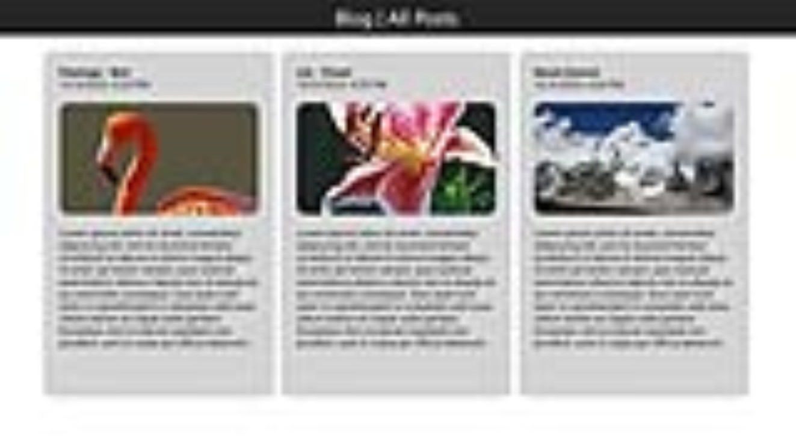

See insights with clarity.
Ask, analyze, and explore with an elegant AI chat and a simple blog. Clean, fast, and focused on what matters.

Fast & Lightweight
Minimal footprint, instant loads, and responsive interactions on any device.
Thoughtful UI
Dark, glassy surfaces with subtle depth—easy on the eyes, easy to use.
Powered by Gemini
Chat with Google Gemini via a simple, secure API bridge.
How it works
- Open the chat and ask any question.
- Gemini responds clearly and quickly.
- Save ideas to your blog for later.